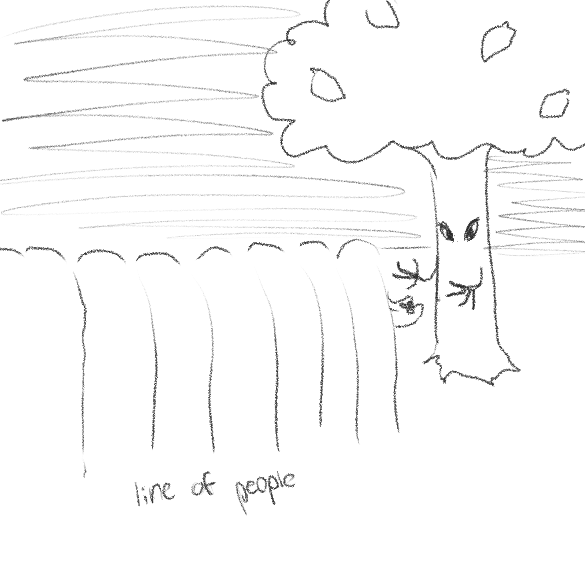

Project 1 was 14 variations, first I thought of 100 questions to try and find a common theme of what I wanted to explore. I ended up picking dreams as my theme. I wanted to do something in the style of indie games like Squirrel Stapler (2023) and Fishing Vacation (2022) so I thought I should try and collage the pieces to give them a more 3D, grungey feel. Once I'd decided on what kind of vibe I wanted I made a list of around 20 scenes from dreams that fit what I was trying to do. Then I made some sketches so I could figure out what kinds of compositions I wanted.
|  |
After this I started collaging things together and made these.
 |
 |
 |
 |
 |
 |
 |
At this point I wasn't too sure about the collages I was doing. I went in a few different directions after this. First, I thought that I should use an image for only the background and focus more on the figures in the drawing. That ended up looking kind of strange so then I decided to not use any collaging or identifiable figures and just draw the colors and how the dream felt (in this case the dream had an overwhelming presence of metal disk, so I tried to draw the metal disk). That one was interesting but it wasn't a very sustainable idea because any other item-drawing attempt I made was repetitive. Then I finally decided to just draw what the dream looked like and not worry about trying to make it look 3D or pull feelings from it. These drawings were of fairly neutral scenes from dreams where I wasn't really sure what was happening, and during the dream what I was feeling didn't match what was going on.
 |
 |
 |
 |
 |
 |
 |
This was an interesting experiment, and if I were to do it again I would stay away from collaging and focus more on drawing interesting scenes from my dreams.
The Colors of “Twilight” · Pushing Pixels. www.pushing-pixels.org/2011/10/03/the-colors-of-twilight.html. For the drawing with the alien/monster (called "Father" in the dream) I was very inspired by the color grading used in the first Twilight movie, as well as other creative choices she made in terms of mood.
“Study of Red Pope, 1962, Second Version | Francis Bacon.” Www.francis-Bacon.com, www.francis-bacon.com/artworks/paintings/study-red-pope-1962-second-version. I really like some of the more abstract work by Francis Bacon, if I had done another successful item-drawing it probably would have more closely mimiced his style and more limited use of red.
Nahum, Chloe. “The Art of Dreams: Creativity through the Unconscious | Art UK.” Artuk.org, 7 May 2020, artuk.org/discover/stories/the-art-of-dreams-creativity-through-the-unconscious. The unconcious mind is something I've been interested for a while, as someone who dreams a lot I can tell that my dreams affect my overall creativity and I try to pay close attention to my dreams and write something down when I wake up.
Alarcó, Paloma . “Dream Caused by the Flight of a Bee around a Pomegranate a Second before Waking.” Museo Nacional Thyssen-Bornemisza, 21 Nov. 2019, www.museothyssen.org/en/collection/artists/dali-salvador/dream-caused-flight-bee-around-pomegranate-second-waking. Another artist that really inspires me is Salvador Dali and his really bizarre paintings, my dreams aren't as crazy as his probably were, but I aim for that level of intrigue and confusion.
SINGULART. “10 Most Famous Paintings by Joan Miro.” Singulart Magazine, 20 Nov. 2023, www.singulart.com/en/blog/2023/11/20/joan-miro-famous-paintings/. Another surrealist painter, who I looked at primarily during my drawing of the metal disk.
Sources
https://vtdigger.org/2020/07/28/scott-moves-mandatory-school-start-date-to-sept-8/ line of kids
https://purepng.com/photo/4031/tree tree
https://pngimg.com/image/25205 lemon
https://www.justdial.com/Bangalore/The-Dugout-Cricket-Ground-Next-Indian-Oil-Petrol-Bunk-Sarjapur-Road/080PXX80-XX80-211117210945-S3B3_BZDET ground
https://www.nytimes.com/1987/12/29/science/new-light-on-the-chemistry-of-dreams.html newspaper
https://www.pexels.com/photo/a-close-up-shot-of-a-crumpled-paper-7002683/ paper
https://www.pexels.com/photo/laptop-on-table-271619/ bed
https://www.google.com/url?sa=i&url=https%3A%2F%2Fwww.amazon.ca%2FSunflowers-
Comforter-Reversible-Pillowcases-Sunflower%2Fdp%2FB08KZKFVYJ&psig=AOvVaw1ufjfrKVF5aO0KEykpQ7PX&ust=1705687618814000&
source=images&cd=vfe&opi=89978449&ved=0CBMQjhxqFwoTCKiwttjD54MDFQAAAAAdAAAAABAh sunflower bedspread
https://www.nicepng.com/ourpic/u2w7a9w7t4y3t4y3_cheap-aesthetic-posters-affordable-vaporwave-poster-aesthetic-posters/ posters
https://www.cleanpng.com/png-carpet-png-63376/ rug
https://purepng.com/photo/21416/objects-piano piano
https://www.theblackarchives.org/archon/index.php?p=digitallibrary/digitalcontent&id=366 dream clipping
https://jodileastewart.com/press/articles/dreams-reveal-unknown/ portrait and clipping
https://www.deviantart.com/nichie--desu/art/Chicken-Wire-PNG-305637013 chicken wire
https://www.effierow.com/creating/painted-upgraded-basement-stairs/ stairs
https://pin.it/784zT1oN8 bad dreams
https://www.freepnglogos.com/pics/table table
https://handmadehouses.com/a-log-cabin-interior-critique/ fireplace
https://www.vecteezy.com/png/20952475-brown-old-wooden-door door
https://sharonhalliday.com/ask-sharon-our-dreams-have-meaning/ clip
https://bplonline.contentdm.oclc.org/digital/collection/p4017coll2/id/552/ clip
https://www.charitybeetle.com/artists-renders-1 car
https://www.vpm.org/2021-09-30/starting-with-the-church-hill-tunnel-collapse-a-filmmaker-is-uncovering-virginias clip
Train car https://www.istockphoto.com/photo/small-train-gm1124505909-295231666
Bird clip https://www.georgiaencyclopedia.org/articles/arts-culture/great-speckled-bird/
| Home | Project 2 | Project 3 | Final Project |